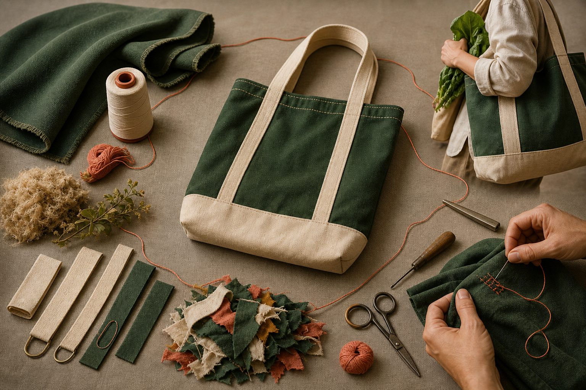

Section 1
Textiles, Plastics and Environmental Impact
Learning purpose: Develop life-cycle thinking so students can identify environmental trade-offs and propose realistic design responses rather than label a reusable item impact-free.
A reusable bag can respond to reliance on single-use plastics, but reuse alone does not erase every impact. Responsible designers examine where impacts can occur and make decisions that help the product earn a long, useful life.
A life cycle follows a product from material sourcing through manufacture, transport, use and end of life. At each stage, a textile product may involve resources, energy, water, waste or pollution. The exact pattern varies with the materials and processes, so broad claims need evidence rather than assumptions.
Single-use products are designed for a short period of use before disposal. A reusable carry item is intended for repeated use, but its benefit depends on whether it is suitable enough to be chosen, durable enough to last and cared for or repaired when possible. A product that is rarely used or quickly replaced may not achieve the designer's intention.
Design decisions can reduce avoidable impact. Material efficiency limits unnecessary offcuts, durable construction supports longer use, maintainable features make care possible, and repairable details can delay replacement. Selecting an existing suitable material may sometimes be more responsible than purchasing extra material only to claim a new product is sustainable.
Environmental decisions contain trade-offs. A thicker material may improve durability but use more resources; extra decoration may communicate a message but add processes and waste. The designer maps likely effects, prioritises the most important needs and records honest reasons instead of calling the whole product environmentally friendly without evidence.
Key vocabulary
- life cycle
- The stages of a product from material sourcing and manufacture through use and end of life.
- single-use
- Intended for one short use before disposal rather than repeated service.
- material efficiency
- Using materials carefully to meet the need while avoiding unnecessary consumption and waste.
- repairability
- The extent to which a product can be fixed so that useful life can continue.
- trade-off
- A decision in which improving one factor may reduce or complicate another.
Comparing two reusable carry-item concepts
- Map both concepts across material sourcing, production, repeated use and end-of-life possibilities without claiming exact impacts that have not been measured.
- Concept A uses more material but has a durable, repairable construction plan; Concept B uses less material but its chosen feature may wear quickly.
- Relate each trade-off to intended use: a product must be useful enough to be selected repeatedly, not merely described as reusable.
- Develop Concept A with a material-efficiency check, or revise Concept B's weak feature, then state the evidence still needed.
Conclusion: Responsible selection balances likely impacts with useful life and records uncertainty instead of making a perfect-product claim.
Ideas to challenge
- Any reusable product automatically has no environmental impact.
- Environmental impact occurs only when a product is thrown away.
- Adding more material always improves sustainability because it can increase durability.
Think across the life cycle
Consider material sourcing, manufacture, transport, use and end of life, and identify where resources, energy, water, waste or pollution may occur.
What makes reuse meaningful
A carry item must be suitable enough to be chosen repeatedly, durable enough to last and maintainable or repairable where possible.
Make honest trade-offs
Use material efficiency, durability, care and repair strategies, then explain likely benefits, costs and evidence gaps without an unsupported green claim.

Complete non-video pathway
Life-cycle impact walk
Tracing one proposed feature through the bag life cycle produces the same evidence-led environmental judgement.
Before
- Read the adjacent life-cycle and useful-life explanation.
- Choose one proposed bag feature or material intention on the life-cycle visual.
During
- Note where the feature enters sourcing, production, use and end-of-life stages.
- At each relevant stage, identify a possible resource, waste or useful-life effect and label any claim that needs more evidence.
- Propose one material-efficiency, durability, maintenance or repair response.
- Explain the trade-off and avoid describing the whole product as impact-free.
After
- Write a balanced environmental claim with one limitation.
- Add one test or source needed before strengthening the claim.
Evidence to keep: A four-stage feature trace and one balanced environmental conclusion.
Check, apply and save evidence0/10 + response
Answer all ten checks. Feedback appears after each choice, so use it to revisit the linked theory before continuing.
Higher-order response
Explain your thinking
Explain how a proposed Awesome Bag could support repeated use while addressing environmental impacts honestly across its life cycle.
Build your response
- Trace likely effects through material sourcing, production, use and end of life.
- Explain how suitability, durability, care or repair could support a longer useful life.
- Propose at least two material-efficiency or waste-reduction decisions.
- Identify one trade-off and one claim that would need more evidence.
- Write a bounded conclusion that avoids describing the product as impact-free.
Success looks like
- Uses life-cycle reasoning and links design decisions to repeated, useful service.
- Explains trade-offs and evidence limits through honest environmental language.
Nothing saved yet.
Resume this packageSection 2
Carrying Traditions, Caring for Country and ICIP
Learning purpose: Introduce diversity, context, Caring for Country and Indigenous Cultural and Intellectual Property so students respond respectfully without copying cultural expressions.
Carrying objects can hold practical, social and cultural meaning. Learning from Aboriginal and Torres Strait Islander knowledge requires context, respect and permission—not copying a shape or pattern because it was found online.
Aboriginal and Torres Strait Islander Peoples belong to many distinct Nations and communities with living cultures, histories and knowledge systems. Materials, making and carrying practices vary across people, purposes, times and places. There is no single Aboriginal style that can represent this diversity.
Caring for Country describes relationships and responsibilities connecting people with lands, waters, skies, living things, culture and community. It is more than adding a nature image to a product. A designer should think about respectful relationships, resource use, responsibility and the source of knowledge rather than treating Country as a decoration theme.
Indigenous Cultural and Intellectual Property, often shortened to ICIP, concerns the rights and interests Aboriginal and Torres Strait Islander Peoples hold in cultural knowledge and expressions. An image being visible online does not mean it is free to copy, alter or place on a product. Cultural authority, context, attribution and permission matter.
A respectful student response begins with authorised learning sources, records where knowledge came from and pauses when cultural authority or permission is unclear. Students can create an original environmental message from their own research and experience instead of imitating culturally specific motifs, stories or styles. Asking before using is a design responsibility, not an obstacle to creativity.
Key vocabulary
- Country
- A term that can describe interconnected lands, waters, skies, living things, culture, people and relationships; its meaning is specific and should not be reduced to scenery.
- Caring for Country
- Responsibilities and relationships through which Aboriginal and Torres Strait Islander Peoples care for and are connected with Country.
- ICIP
- Indigenous Cultural and Intellectual Property: rights and interests in cultural knowledge and expressions.
- cultural authority
- The recognised responsibility or right to speak for, share or permit use of particular cultural knowledge or expression.
- attribution
- Clearly identifying and acknowledging the source or cultural authority for information or work.
Responding to an unlabelled cultural image online
- Pause before copying: visibility online does not establish who created the image, what it means or whether reuse is permitted.
- Identify the missing context, including Nation or community, creator, purpose, cultural authority, attribution and permission.
- Take the uncertainty to the teacher and use an authorised source pathway rather than inventing an explanation.
- Develop an original design direction based on the carry item's function and the student's own environmental message, without imitating the image's motifs or style.
Conclusion: Respectful design protects cultural context while keeping the student's creative response genuinely original.
Ideas to challenge
- There is one Aboriginal style that any student can use to show respect.
- An image found through a public search is automatically free to copy or alter.
- Caring for Country means adding a leaf, animal or landscape image to a product.
Diversity and context
Aboriginal and Torres Strait Islander cultures are diverse and living; carrying practices and meanings vary across Nations, communities, people, purposes, times and places.
Caring for Country is relational
Caring for Country concerns interconnected relationships and responsibilities, not simply using a nature image or treating Country as a visual theme.
ICIP design protocol
Check source, context, cultural authority, attribution and permission; pause when these are unclear and create an original response rather than copying cultural expressions.
Complete non-video pathway
Context before design
Evaluating a fictional source card teaches the exact authority, attribution and permission decision without reproducing cultural imagery.
Before
- Read the adjacent Caring for Country and ICIP explanation.
- Use only the fictional source card and the neutral authority-decision visual.
During
- List what the card tells you about creator, Nation or community, purpose, context, attribution and permission.
- Circle every missing detail that prevents a respectful reuse decision.
- Write the question you would take to the teacher or authorised source.
- Describe an original alternative based on function and your own environmental message without copying the cultural expression.
After
- Record a stop, seek-authority or proceed decision with evidence.
- Do not copy any motif, story or cultural expression from an unverified source.
Evidence to keep: A respectful authority decision and an original, non-copying alternative.
Check, apply and save evidence0/10 + response
Answer all ten checks. Feedback appears after each choice, so use it to revisit the linked theory before continuing.
Higher-order response
Explain your thinking
Evaluate a scenario in which a student finds an unlabelled cultural image online and wants to place a similar version on an Awesome Bag. Propose a respectful design response.
Build your response
- Explain why diverse cultures and specific context matter in this scenario.
- Identify the missing cultural authority, source, attribution and permission information.
- Explain how Caring for Country differs from using a nature or cultural image as decoration.
- Describe the pause-and-ask steps the student should take.
- Propose an original alternative based on function and the student's own environmental message.
Success looks like
- Applies diversity, context, Caring for Country and ICIP reasoning accurately and respectfully.
- Protects cultural expression while proposing a practical, genuinely original design direction.
Nothing saved yet.
Resume this packageSection 3
Designing for Reuse and Environmental Communication
Learning purpose: Connect user-centred function, useful life and truthful communication so students can develop an original reusable carry-item concept with testable intentions.
The Awesome Bag needs to work as a personal carry item and respond to an environmental problem. Function earns repeated use; communication helps the user understand the design intention. Strong concepts make these jobs support each other.
Designing for reuse begins with a real user and carrying task. The item needs suitable capacity, access, carrying comfort, strength and convenience for its intended purpose. The exact dimensions and pathway come later from the approved project requirements, but the concept should already explain why a person would choose it repeatedly.
Useful life depends on more than strong material. Stress areas, opening and carrying features, maintainability, repair possibilities and decoration placement can all influence whether the product continues to work. Designers anticipate likely use, then plan tests rather than promise durability without evidence.
Environmental communication can use original colour, form, words or symbols to make an intention visible. The message must remain legible and suitable for the user, and it must not rely on copied cultural expressions. A slogan does not compensate for weak function, and a product should not be described as green or impact-free without evidence.
A design intention becomes more useful when it can be checked. Instead of 'make an eco-friendly bag', a student might aim for a carry item that suits the chosen everyday task, survives an agreed use test, uses an efficient component layout and communicates one clear reuse message. These are draft design checks, not a substitute for the formal criteria supplied by the teacher.
Key vocabulary
- user-centred
- Developed around the needs, abilities and context of the intended user.
- useful life
- The period during which a product continues to perform its intended purpose.
- legible
- Clear enough for the intended audience to recognise or read.
- environmental claim
- A statement about how a product, material or process affects the environment.
- testable intention
- A design aim written clearly enough that evidence can be collected to judge it.
Turning 'eco-friendly bag' into a responsible design direction
- Name the user and carrying task instead of beginning with a broad environmental label.
- Identify reuse supports: convenient access, suitable carrying method, planned durability, maintainability and efficient material layout.
- Choose one original environmental message and a legible placement that will not interfere with the product's use or future construction.
- Rewrite the claim as testable intentions and list the evidence needed, such as user feedback, a function test, layout record and sample evaluation.
Conclusion: The revised direction explains what the product should do and what evidence could support the environmental message without claiming perfection.
Ideas to challenge
- A strong environmental slogan can compensate for a product that is inconvenient to use.
- Calling a feature durable is the same as testing its performance.
- A testable design intention is already a formal assessment rubric.
Design for repeated use
Start with the user and task, then consider suitable capacity, access, carrying comfort, strength, convenience, maintenance and repair.
Communicate responsibly
Use an original, legible message that supports the product without copying cultural expressions or making unsupported green claims.
Write testable intentions
Replace vague labels with clear aims linked to user feedback, function tests, material-layout evidence and sample evaluation.

Complete non-video pathway
From slogan to evidence
Transforming a vague slogan into a user-centred, testable concept teaches the exact reuse-and-communication relationship.
Before
- Read the adjacent explanation of function, repeated use and truthful communication.
- Study the concept-board links between user, features, message and evidence.
During
- Name the intended user, the items to be carried and the situation in which the product should be selected repeatedly.
- Choose three features that support suitable access, carrying, useful life, care or repair.
- Develop one original environmental message and place it where it remains legible without interfering with function.
- Write a testable intention for each major decision and name the evidence that could judge it.
After
- Check that every claim is proportionate to the planned evidence.
- Record one trade-off or uncertainty rather than presenting the product as impact-free.
Evidence to keep: A coherent concept statement, three reuse-supporting features and testable evidence intentions.
Check, apply and save evidence0/10 + response
Answer all ten checks. Feedback appears after each choice, so use it to revisit the linked theory before continuing.
Higher-order response
Explain your thinking
Develop and justify a responsible concept for a reusable personal carry item that combines useful function with honest environmental communication.
Build your response
- Define the intended user, carrying task and reason the item would be selected repeatedly.
- Explain at least three features supporting access, carrying, durability, maintenance or repair.
- Describe an original, legible environmental message and its purposeful placement.
- Convert the main intentions into testable statements and name suitable evidence.
- Acknowledge one environmental trade-off or limit to the concept's claim.
Success looks like
- Integrates user-centred function, useful life and original communication in a coherent concept.
- Uses testable intentions and bounded environmental reasoning rather than unsupported claims.
Nothing saved yet.
Resume this packageModule review
Three sections, one connected idea
Use these direct links to reopen any incomplete package. A section counts when all ten checks and a substantive long response are saved.